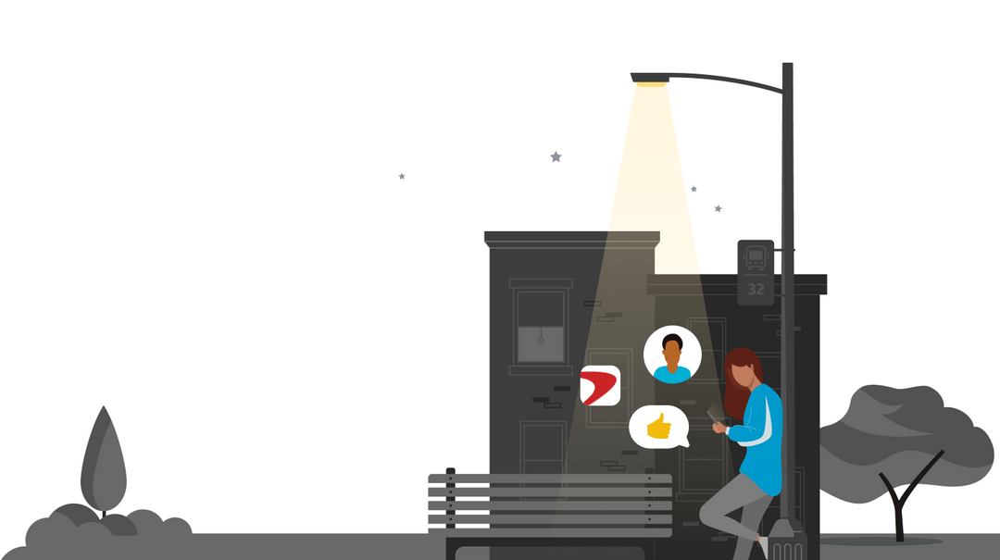

In my day-to-day design work I strive to create intuitive products that are simple, placing the user needs top of mind. The goal of design research and early testing is to develop and maintain empathy for the user. Solutions should not come at the expense of clearly defining users problems. These principles help me thrive and also fuel my mentoring and championing designers, which bring me joy!